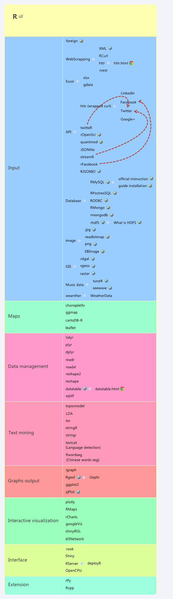

This page will updated with interesting tools for data scientist. The tool varies from data management, data cleaning, command line tool, some solution when tackling large dataset (not that big data), data visualisation, Data Science learning resource, etc…
Learning Resource
Reference:
Statistics & Machine Learning
- Statistical Learning Stanford / OpenEdX Course: reading…
- Mining Massive Data Sets / Stanford Coursera & Digital: waiting for next coursera course…
- Machine Learning Andrew Ng Coursera: done…
Programming
- Python Scientific Lecture Notes: reading…
Data cleaning
- Open Refine: providing data cleaning solution / open source
- Data cleaner: data cleaning and assessment / open source & commercial
- Trifacta Wrangler: free and commercial edition exists, nice interface but lack of an export of standard script.
Webscrapping
- R libraries:
- rvest
- XML
- Python packages:
- urllib2 + beautifulsoup
- scrapy
Parallel computing
- Spark: fast and general engine for large-scale data processing / open source
Probabilist Programming
Memory bottleneck
- SQLite: write local installation-free SQL DB
Data visualization
- Map
- timeline with map: Timeline.js + StoryMap.js + TimeMapper + TimelineSetter
- working with map animation & more: OpenLayer
- image + map + personalized shiny: ImageMapster
- beautiful shape file and tiff: natural earth data
- Nasa Source: http://neo.sci.gsfc.nasa.gov/
- Datawrapper: link, to create personal server and share your creation
- 3rd party visualization solution
$
Design resources
- Icon set: flaticon
R
My Collection of R packages
